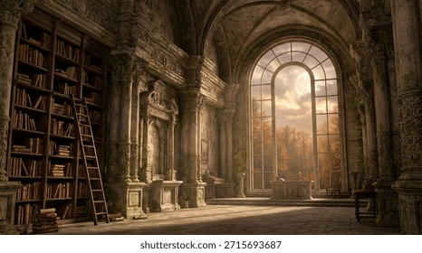

Entre todos os livros apresentados neste projeto, os que mais me marcaram foram Harry Potter e a Pedra Filosofal; Percy Jackson e o ladrão de Raios; A Culpa é das Estrelas. Cada um deles proporcionou uma experiência diferente, seja pela magia, pela aventura ou pela emoção.

Uma binlioteca é muito mais do que um lugar cheio de livros. Ela é um espaço onde podemos descobrir novos mundos, aprender coisas diferentes e desenvolver nossa imaginação.
A leitura é uma das formas mais importantes de adquirir conhecimento e ampliar nossa visão de mundo. Por meio dos livros podemos viver aventuras, conhecer personagens inesquecíveis e refletir sobre diferentes situações da vida.
A Biblioteca dos Sonhos foi criada com o objetivo de compartilhar histórias que marcaram leitores e incentivar o hábito de leitura. Espero que este projeto mostre a importância dos livros e desperte o interesse por novas leituras, pois cada livro tem o poder de ensinar, emocionar e transformar pessoas.